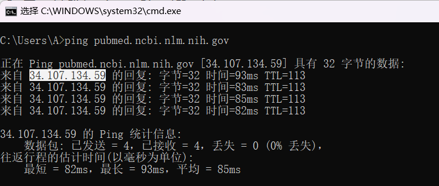

1. 在cmd中输入：ping pubmed.ncbi.nlm.nih.gov

2. 记录cmd中显示的IP地址：34.107.134.59
3. 在cmd中输入：notepad C:\Windows\System32\drivers\etc\hosts

4.更改hosts文件，添加：34.107.134.59 pubmed.ncbi.nlm.nih.gov

5. 在cmd中输入：ipconfig /flushdns

6. 关闭浏览器，再次打开并访问pubmed.ncbi.nlm.nih.gov